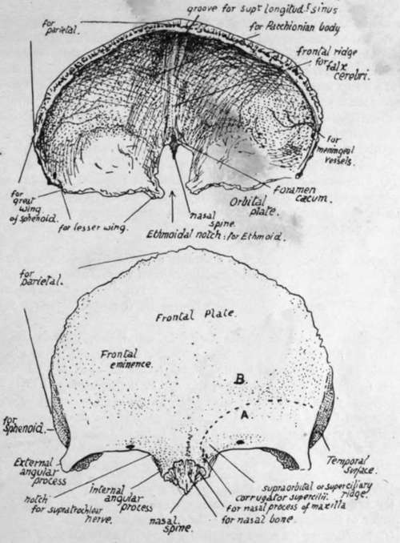
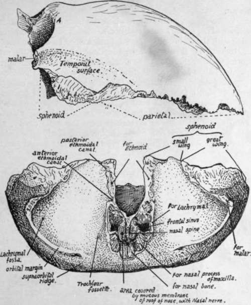

Separate Bones Of The Skull
Description
This section is from the book "The Anatomy Of The Human Skeleton", by J. Ernest Frazer. Also available from Amazon: The anatomy of the human skeleton.
Separate Bones Of The Skull
When examining the individual bones the student should have beside him a complete or half-skull in addition to the disarticulated bones. Every point observed on the separate bone ought to be verified and extended on the whole skull, and the general position of the particular bone in the skull must be continuously borne in mind. In this way the individual bone and its related structures are followed and comprehended as parts of a connected whole, and the meaning of its attachments, etc., becomes apparent, while at the same time an extended knowledge of the whole skull is gradually built up that enables one to understand it much more fully on going over it again.
Frontal Bone
A tabular bone forming the front of the cranial region and a small portion of the temporal fossa laterally, but also sending back from its lower border two orbital plates which make the greater part of the roof of each bony orbit.
The frontal plate, on its front surface, is smooth and convex, covered by the anterior part of the Occipito-frontalis sheet and, above the orbital margins, by the Orbicularis palpebrarum on each side. The supraorbital vessels and nerves run up to the scalp deep to the last-named muscle, and the bone frequently shows grooves marked on it by filaments of the nerve.
Fig. 165.-Frontal bone. Upper figure, from above and behind. Lower figure, from the front: A., surface (below interrupted line) covered by Orbicularis palp. ; B., surface covered by Occipito-frontalis.
The surface is bounded above by the line of the coronal suture and below by the orbital margins : between these it is prolonged down for a little distance as a nasal surface, on which are two rough articular areas on each side, the inner for the corresponding nasal bone and the outer for the nasal process of the maxilla. This surface ends below and centrally in the nasal spine.
The front surface presents :-
(a) Two frontal eminences, marking the site of commencing ossification and due to the fixation of the earlier curves as a result of this.
(b) Supraorbital ridges meeting centrally and fading away above the middle of the orbital margins-due for the most part to the existence of the frontal sinus, a large air sinus situated here between the two tables of the bone. Covered by Orbicularis laterally and Occipito-frontalis centrally, and giving origin to fibres of Corrugator supercilii that run out to join the deep surface of Orbicularis.
(c) On the orbital margin the supraorbital notch for these vessels and nerve : sometimes, as in the figure, this is closed and converted into a foramen by ossification of a " supraorbital ligament " that crosses the notch. In the floor of the notch may be seen a small canal for minute vessels and nerve to the frontal sinus. The orbital margin ends externally in the external angular process : it is less sharply marked at its inner end, presents an ill-defined groove here for the supratrochlear nerve, and turns down as the internal angular process at the side of the nasal surface. It has the superior palpebral ligament attached to its outer part.
(d) The metopic suture, always to be found between the supraorbital ridges, and occasionally (7 or 8 per cent. Europeans) completely separating the two halves of the bone : the complete fissure occurs in only 1 per cent, of African skulls, and 4 or 5 per cent, of skulls of yellow races.
The temporal surface (Fig. 166) is separated from the frontal surface by the anterior part of the superior temporal crest, running down to the external angular process : it gives origin to fibres of Temporal muscle. A large part of the superficial aspect of the bone here is articular, being overlapped by the parietal above and the great wing of sphenoid below.
The orbital surface of each orbital plate (Fig. 166) is deeply concave, and triangular in shape with the blunted apex pointing backwards and inwards ; this accords with the pyramidal shape of the orbital cavity, which forms an apex behind and internally, at the optic foramen. As the orbital plate makes the greater part of the roof of the cavity its general shape is therefore triangular, but its apex is cut off because the lesser wing of sphenoid forms the roof of the apical part of the cavity. The surface is in contact with the upper surface of the Levator palpebral and Superior oblique muscles and the orbital fat and the supraorbital vessels and nerve and supratrochlear nerve, and presents :-
(a) Hollow for lodging the lachrymal gland.
(b) A depression, sometimes a small tubercle, that marks the attachment of the pulley of the Superior oblique-the trochlear fossette.
(c) Notches on its inner margin that mark the position of the anterior and posterior orbital (ethmoidal) foramina, completed by the articulation with the ethmoid.
Notice that the inner borders of the surfaces are practically parallel, while the outer ones, if prolonged, would meet at a right angle : compare this with the orbit in the skull.
The inner margins are connected by the nasal part of the bone in front, but they are separated in their posterior half or more by the ethmoidal notch ; this is filled by the ethmoid in the complete skull. Observe that the ethmoid lies below the level of the orbital plates, which rest on it, so that there is a rough articular surface running along the margins of the notch, for the ethmoid. This ethmoidal surface comes forward to the level of the nasal spine, where it shows the openings of the frontal sinuses on each side. Between each of these and the spine is a smooth concave strip of bone that forms the roof of the nasal fossa here and has the nasal nerve lying on it deep to the mucous membrane.
The deeply concave cerebral surface (Fig. 165) of the bone covers the frontal lobe of the brain and is marked by its convolutions : notice how these are particularly apparent on the convex surface of each orbital plate. In addition to these cerebral markings and those for meningeal vessels between it and the dura mater the cerebral surface shows :-
Fig. 166.-Frontal from the side and from below.
(a) A median ridge for the attachment of the falx cerebri, passing above into a groove for the superior longitudinal sinus which lies between the two layers of the falx. The ridge ends below at the margin of a small pit, the foramen ceecum, just in front of the ethmoidal notch : the foramen usually transmits a minute vein connecting the sinus with the veins of the frontal sinus.
(b) Depressions near the attachment of the falx for Pacchionian bodies.
The margins of the bone are articular. The parietal articulates along the serrated coronal border to about half-way down the temporal surface. Below this the sphenoid articulates by its greater and lesser wings as far as the ethmoidal notch, taking all the articular surface except that on the external angular process, which articulates with the malar. The ethmoid lies against the inferior aspect of the margins of the notch and also articulates with the lower border of the nasal spine, between the two nasal roof areas. Arranged round the spine antero-laterally are, from within and in front outwards and backwards, articular surfaces for the nasal, maxilla, and lachrymal. The nasal bones lie together along the front and upper border of the spine.
Development
The bone is developed in membrane, in which two main centres appear in the eighth week, in the region of the future frontal eminences. Small additional centres, appearing later and fusing with the main halves, have been described for the nasal spine, the trochlear spine, the external angular process, and the back border of the orbital plate : it seems doubtful whether these are to be considered as of usual occurrence. The bone is in two separated halves at birth, but these come into contact in the first year, fuse in the middle region of the metopic suture in the second year, and are completely joined by the seventh or eighth year. There may be total absence of fusion, as already mentioned, or the metopic suture may remain unclosed below, forming a metopic fontanelle, and Wormian bones may appear here or rarely in the upper part.*
The frontal sinuses develop as extensions from the nasal cavity, and are first indicated in the bone in the first or second year, but grow slowly up to puberty. After this they increase rapidly, and continue to grow until a late period (see later, under Nasal Cavities).
Continue to:
- prev: Facial Skeleton
- Table of Contents
- next: Parietal